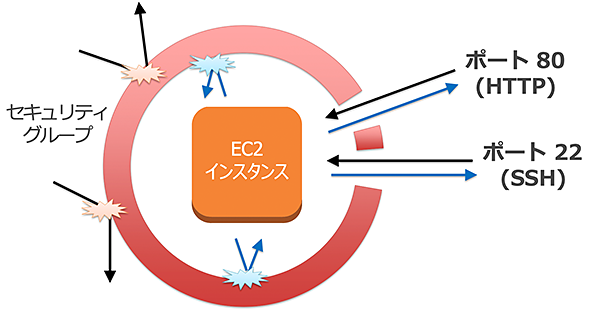
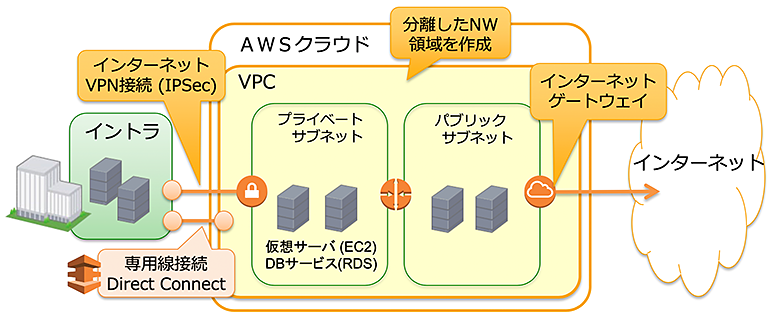
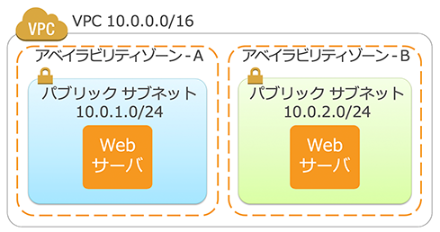

Amazon Web Services (AWS) を利用して、セキュアでスケーラブルなウェブサービスの構築手順を体験できるハンズオンを実施いたします。
AWS を使ってより安全にサービスを運用する方法、ウェブサービスの規模に合わせて、柔軟にシステムを拡張する方法を体験できる内容です。
本ハンズオンのドキュメントで掲載されているスクリーンキャプチャは 2022年03月時点のもので、現在の画面とは異なる場合がございます。予めご了承ください。
【準備事項】
- AWS を利用可能なネットワークに接続された PC (Windows, Mac OS, Linux等)
- 事前に用意していただいた AWS アカウント
- SSH クライアント (Windows 環境では Teraterm を推奨)
- ブラウザ (Firefox もしくは Chrome を推奨)
AWS のセキュリティやスケーラビリティを 高める機能・サービス
- セキュリティグループ = ファイアウォール
- Amazon VPC = プライベートな仮想ネットワーク
- AWS IAM = AWS リソースへのアクセス権限の管理

インターネットからのトラフィック (インバウンド) をブロックするだけでなく、Amazon EC2 インスタンスからのトラフィック (アウトバウンド) も制限できるファイアウォール機能です。

個々のインスタンスごとに、インバウンド、アウトバウンドに対して下記の許可ルールを定義できます。
ルールはステートフルで扱われ、明示ルールが無い通信は拒否されます。
- インバウンド
- プロトコル (TCP/UDP/ICMP)
- ポート範囲 (ポート番号の範囲)
- 送信元 (アクセス元のIPアドレス)
- アウトバウンド
- プロトコル (TCP/UDP/ICMP)
- ポート範囲 (ポート番号の範囲)
- 送信先 (アクセス先のIPアドレス)
クラウド内にお客様専用の プライベートアドレス の空間を構築します。
社内ネットワークとインターネット VPN やキャリアの閉域網で接続できます。

VPC とサブネットについて
1 つの VPC は、1 つのネットワークアドレス (CIDR) で定義します。
1 つの VPC 内には複数のサブネットを作成することができます。
サブネットは特定のアベイラビリティゾーン内に配置します。

CIDR | IP アドレス数 |
xxx.xxx.xxx.xxx/16 | 65,531 |
xxx.xxx.xxx.xxx/20 | 4,091 |
xxx.xxx.xxx.xxx/24 | 251 |
xxx.xxx.xxx.xxx/28 | 11 |
各サブネットにおいて先頭の 4 IP アドレスと最後の 11 IP アドレスは AWS 側で確保されます。
ルートテーブルについて
各サブネットはルートテーブルを持っています。
設定を変更することでデータの流れを制御可能です。
- パブリックサブネット ルートテーブル: rtb-XXXXXXXX
送信先 | ターゲット |
10.0.0.0/16 | local |
0.0.0.0/0 | igw-XXXXXXXX |
IGW (インターネット ゲートウェイ) へのルーティングを設定すると、外部とのアクセスが可能になります。
- プライベートサブネット ルートテーブル: rtb-XXXXXXXX
送信先 | ターゲット |
10.0.0.0/16 | local |

VPC でのセキュリティーグループと NACL

NACL (Network Access Control List)
- 個々の Subnet ごとにアクセス制御が可能
- Inbound, Outbound に対して下記の設定が可能
- Inbound
- Port range (ポート番号)
- Source (アクセス元IPアドレス)
- Allow/Deny
- Outbound
- Port range (ポート番号)
- Destination (アクセス先IPアドレス)
- Allow/Deny
- Inbound
制御可能な項目はセキュリティーグループと同じで、ステートフル(SG)かステートレス(NACL)かの違いがあります。
NACL は本日は使いません。
AWS操作をよりセキュアに行うための認証・認可の仕組み
AWS利用者の認証とアクセスポリシーを管理 • グループ、ユーザー、ロールで管理
- 実行出来る操作を IAM ポリシー規定 • ユーザーごとに認証情報の設定が可能
- マネージメントコンソールにはユーザ名とパスワードを使用 さらに、MFA(多要素認証) の利用が推奨
- API にはアクセスキーとシークレットキーを使用
IAM ポリシーで必要最小限のみ付与

備考: MFA (多要素認証) で認証の安全性を高める
- AWS アカウント (ルートアカウント) • ハードウェアトークンで保護
- トークンは金庫などで管理

- トークンは金庫などで管理
- IAMアカウント
- 個人ごとのアカウント
- 仮想 MFA 対応のスマホアプリで保護